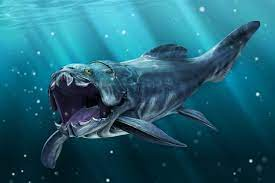

Dunkleosteus (alemán: Dunkle «oscuro» + griego antiguo: osteos «hueso») es un género de peces placodermos artrodiros2 que existieron a finales del período Devónico, desde hace aproximadamente 380 hasta 360 millones de años, en el Frasniense y Fameniense. De algunas especies descritas se han hallado numerosos fósiles en Norteamérica, Polonia, Bélgica y Marruecos. Como otros diníctidos, Dunkleosteus se caracterizaba por una cabeza acorazada provista de mandíbulas con cuchillas dentales poco usuales. Aunque otros placodermos rivalizaban con él en tamaño, Dunkleosteus es considerado uno de los depredadores marinos más fieros y mortales que han existido. Con hasta seis metros de largo y 1 tonelada de peso, este cazador estuvo en la cima de la cadena alimentaria de su ambiente y, probablemente, depredaba toda clase de fauna. Nuevos estudios han revelado varios rasgos tanto en su alimentación y biomecánica como en su ecología y fisiología. En las últimas décadas, Dunkleosteus ha logrado reconocerse en la cultura popular, con una gran cantidad de especímenes en exposición, y notables apariciones en medios de entretenimiento.